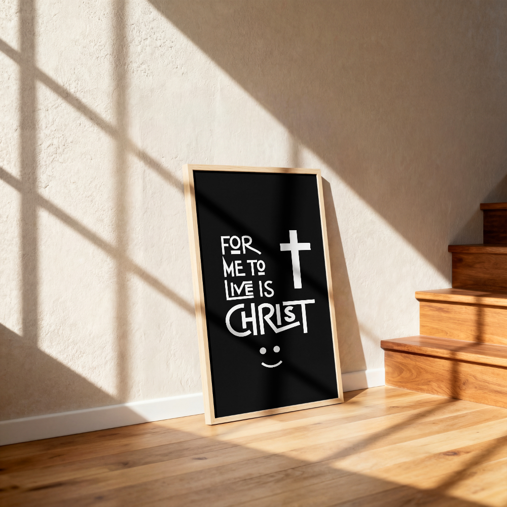

Practical projects / Made by you
Make a little more
with what you have.
Clear, considered guides for improving your home, learning a tool, and giving useful things another life.
The Hodaris workshop
Start with a clear plan. Work at a safe pace. Finish with something useful — and know when a project is best left to a qualified professional.
Browse the workshop
What would you like to make?
Choose a topic to find a practical place to begin.
No projects in this category yet. Try another topic.
Project field guide
A clear process makes better work.
Each guide brings the plan, preparation, build and final check together — so you know what to do before you begin.
Gather first
01 — 04
THE PROCESS
Plan carefully.
Use the right tool.
Work safely.
Make it your own.
Keep learning